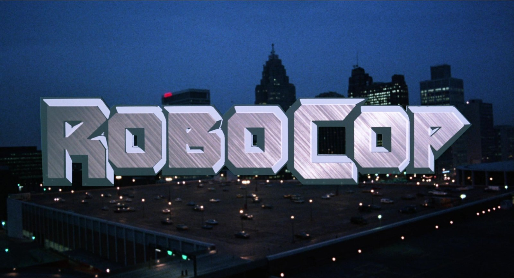
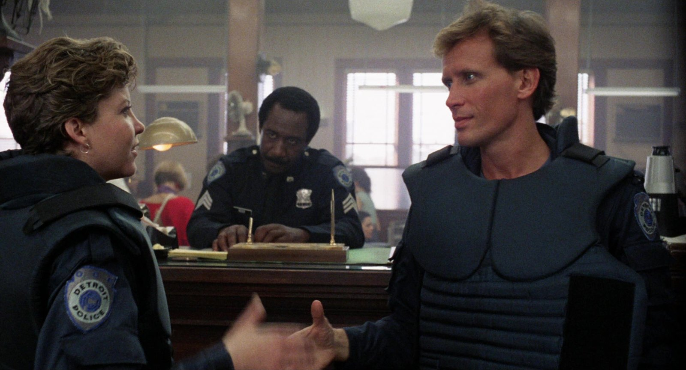
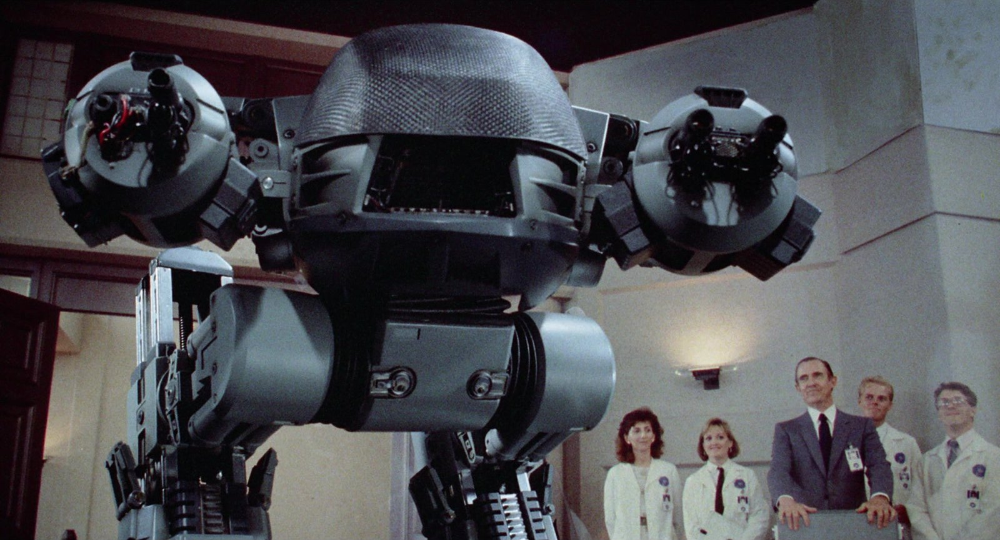
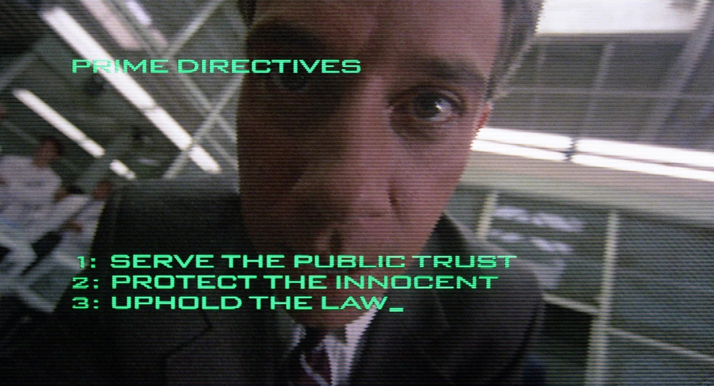
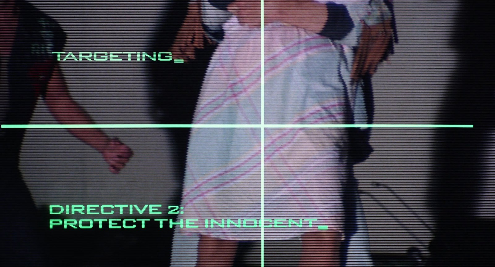
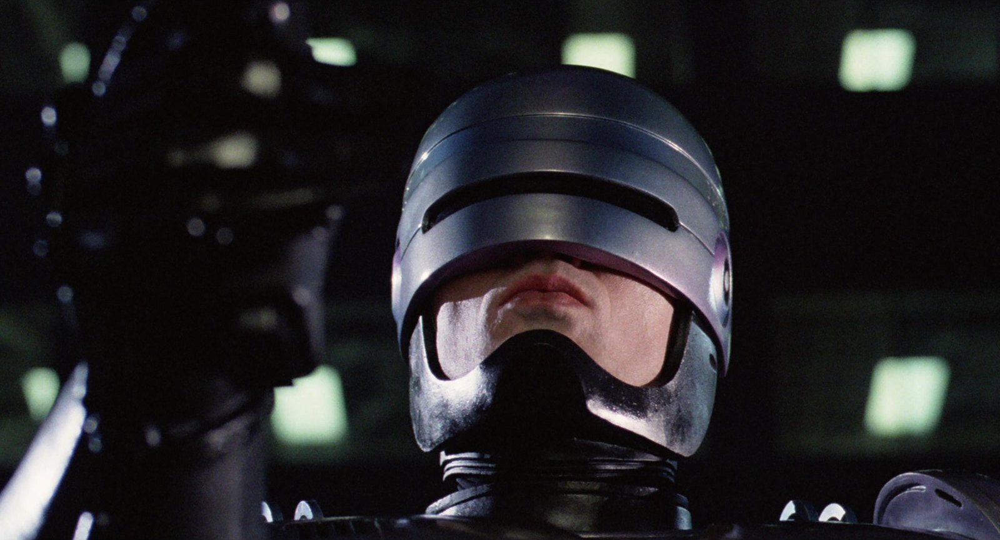
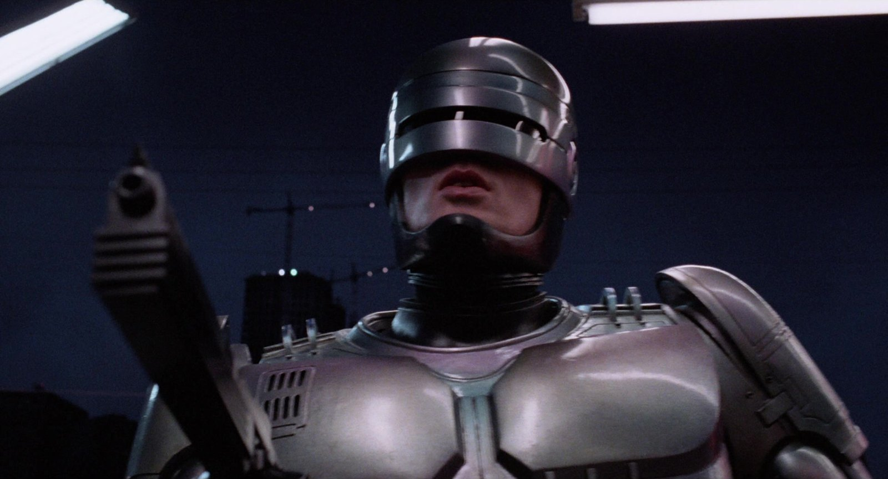
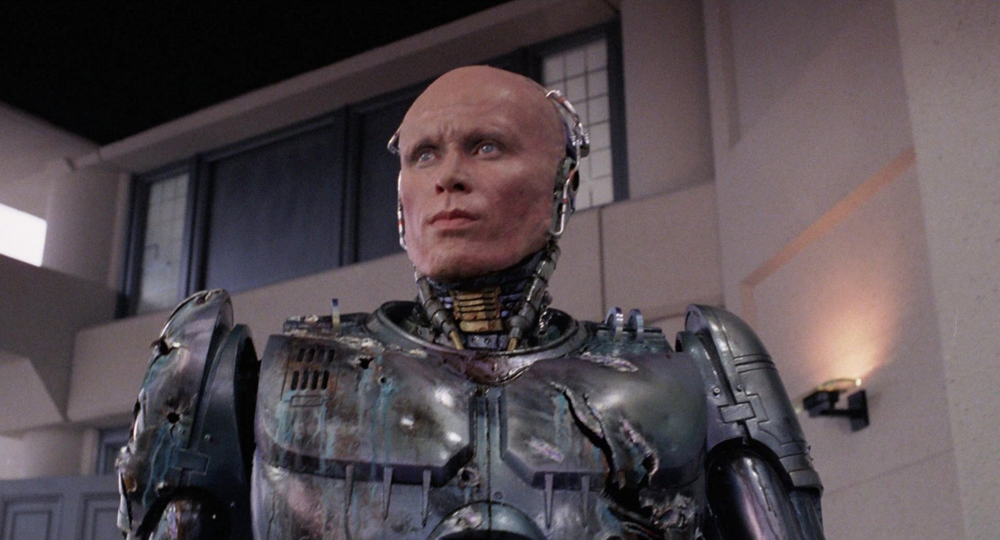

Sommaire8 sections
Celui-là, je n'aurais pas dû le voir. Pas à neuf ans.
Mon père l'avait enregistré sur France 3. C'était encore l'époque du carré blanc, ce petit rectangle qui s'affichait dans un coin de l'écran pour prévenir que le film contenait de la violence. Je l'ai vu, et je l'ai regardé quand même.
Je me souviendrai toujours de la mort d'Alex Murphy. Sauvage, brutale, dérangeante, sadique. Puis il y a cet acolyte de Clarence Boddicker qui a un accident, percute une cuve et ressort du véhicule complètement défiguré, avant de finir en bouillie sous la voiture de son propre chef de gang. Des images qui ne partent pas.
Je ne suis pas ressorti indemne de cette expérience. Aujourd'hui encore, quand je remets le film, il m'arrive de redevenir le petit garçon de neuf ans et de fermer les yeux devant certaines séquences. Et pourtant, je comprends maintenant ce que je n'avais pas vu à l'époque : sous la violence, il y a une satire de la culture américaine, menée avec une intelligence rare.
Ce soir, on rouvre les yeux.

Le titre du film
RoboCop, c'est un film de 1987 réalisé par Paul Verhoeven, d'après un scénario de Michael Miner et Edward Neumeier. Production Orion Pictures, pour un budget de 13 millions de dollars. Durée : 102 minutes.
Au casting, Peter Weller dans le rôle d'Alex Murphy, le policier devenu RoboCop, et Nancy Allen dans celui de sa coéquipière, Anne Lewis. En face, Kurtwood Smith joue Clarence Boddicker, le chef de gang. Dan O'Herlihy, Ronny Cox et Miguel Ferrer complètent l'équipe de l'OCP, la multinationale qui contrôle la police. Et Paul McCrane est l'acolyte qui finit sous les roues de la voiture.
La musique est de Basil Poledouris.
En France, le film était interdit aux moins de douze ans avec avertissement. Il a fait 1 686 525 entrées. Un détail qui ne surprendra pas les gamins que nous étions : il y avait un avertissement.

Anne Lewis, le sergent Reed et Alex Murphy
L'idée vient d'Edward Neumeier, après avoir travaillé sur le tournage de Blade Runner, où Harrison Ford traque des réplicants. De là naît l'histoire d'un policier transformé en machine.
Plusieurs réalisateurs refusent le projet, dont David Cronenberg et Jonathan Kaplan. C'est finalement Paul Verhoeven, 49 ans, qui n'avait encore jamais tourné aux États-Unis, qui le prend en charge.
Pour le rôle, plusieurs noms circulent. Arnold Schwarzenegger voulait le rôle, et le costume est même remanié pour sa carrure. Le résultat ressemble à un Bonhomme Michelin, et le personnage perd son drame. On cherche alors ailleurs : Tom Berenger, Rutger Hauer sont envisagés, et Lance Henriksen refuse, avant que Peter Weller ne soit choisi. Il s'inspire d'Ivan le Terrible d'Eisenstein et de son interprète, Nikolai Cherkassov. Verhoeven, lui, pense à la femme-robot de Metropolis pour la gestualité du personnage.
Le film se passe à Detroit, mais il est tourné surtout à Dallas, dont l'hôtel de ville devient le siège de l'OCP. Pour l'affrontement final avec Boddicker, l'équipe choisit les aciéries de Monessen, en Pennsylvanie.
Le maquillage d'Emil Antonowsky, lui, prend presque une journée entière.

ED-209, lors de la démonstration à l'OCP
Detroit, dans un futur proche. La ville est au bord de l'effondrement, et elle confie sa police à une multinationale : Omni Consumer Products, l'OCP.
Lors d'une démonstration, ED-209, un robot policier, dysfonctionne et tue un volontaire. Un jeune cadre, Bob Morton, saisit l'occasion de présenter son propre projet : RoboCop.
Pendant ce temps, l'officier Alex Murphy et sa coéquipière Anne Lewis poursuivent Clarence Boddicker et son gang. Murphy ne s'en sortira pas. L'OCP reconstruit alors son corps en cyborg : un policier sans mémoire de son passé, programmé avec trois directives… et une quatrième, classifiée.
Mais des fragments de la mémoire de Murphy refont surface. RoboCop se lance sur les traces de Boddicker, et découvre que cette affaire remonte bien plus haut qu'un simple gang.
Je m'arrête là.

Les directives de RoboCop
RoboCop se regarde d'abord comme un film d'action. Mais c'est une satire, et ce qui m'a longtemps échappé tient dans cette phrase de Michael Miner, l'un des deux scénaristes : une comédie pour une époque cynique, celle de l'Amérique de Reagan. Au cœur du film, un flic qui travaille pour une entreprise qui prétend le posséder, et qui fait malgré tout ce qui est juste.
L'autre scénariste, Edward Neumeier, visait la culture d'entreprise des années 80 : la finance agressive, Wall Street qui lit Le Livre des cinq anneaux, et la bureaucratie qui plombe Detroit. Dans le film, les cadres de l'OCP et les criminels de la rue se ressemblent plus qu'ils ne le croient. Les critiques de l'époque l'ont remarqué, avec des piques sur les jeux télévisés et la culture militaire.
Les fausses publicités et les flashs d'information sont l'autre arme du film. Verhoeven les voulait abrupts, pour déstabiliser le spectateur.
Il y a aussi la violence. Verhoeven la voulait exagérée, surréaliste, presque drôle. Roger Ebert et le Los Angeles Times ont remarqué qu'elle devenait si excessive qu'elle en devenait comique. D'autres, comme le New York Times, y ont vu un prétexte à des images violentes. Moi, à neuf ans, je n'ai pas ri.
Reste le cœur. Verhoeven avait d'abord dédaigné le script. C'est sa femme qui l'a convaincu : l'histoire, disait-elle, parle d'un homme qui perd son identité. Il compare d'ailleurs la mort de Murphy à la crucifixion, pour que le spectateur s'attache à lui. Et c'est peut-être pour cela que cette scène m'a autant marqué.

« Directive 2 : protéger l'innocent »
À sa sortie, RoboCop n'a pas fait un carton. Il démarre à environ 8 millions de dollars sur le premier week-end, prend la première place du box-office deux semaines de suite, et reste six semaines dans le top 10. Au final, environ 53 millions de dollars pour un budget de 13 : un succès modeste, l'une des surprises de l'été. Le public lui donne un A− au CinemaScore.
La critique salue un film d'action intelligent, avec de la profondeur et une satire féroce des entreprises, tout en débattant de sa violence. Elle applaudit aussi Peter Weller, qui fait passer de la vulnérabilité sous le costume, et Nancy Allen, source de chaleur humaine du film. Aux Oscars, il remporte une récompense spéciale pour le montage sonore et décroche deux nominations. Aux Saturn Awards, il repart avec cinq prix, dont celui du meilleur film de science-fiction et de la meilleure réalisation pour Verhoeven.
Puis il y a la VHS. Sortie en janvier 1988, elle se serait écoulée à environ 24 millions de dollars de ventes, et le film devient un des gros succès de la location, avec une longue liste d'attente. C'est là que beaucoup d'entre nous l'ont vraiment découvert, comme moi, grâce à une cassette enregistrée par mon père.
Avec le temps, la critique l'a rangé parmi les meilleurs films des années 80 et parmi les grands films de science-fiction et d'action. Il a donné naissance à toute une franchise : deux suites, des séries, des jeux vidéo, des comics, des jouets, et un remake en 2014.

RoboCop
Parce que RoboCop n'est pas un film qui a vieilli, c'est un film qui a gagné en justesse. Une ville qui confie sa police à une multinationale, des écrans qui coupent l'action pour vendre quelque chose, des cadres qui se ressemblent tous : ce qui passait pour de la caricature en 1987 se lit autrement aujourd'hui.
Parce que sous l'armure, il y a Peter Weller. La critique l'a salué pour la vulnérabilité qu'il fait passer derrière le masque, et pour cette machine qui cède sans cesse à l'humanité. À côté de lui, Nancy Allen apporte la chaleur humaine du film.
Parce que Paul Verhoeven y filme la violence comme personne : exagérée, surréaliste, presque drôle, au point que Roger Ebert la trouvait comique. Et pourtant, elle fait encore de l'effet. Je le sais mieux que quiconque.
Parce que c'est du cinéma d'action des années 80 dans ce qu'il a de meilleur : un vrai méchant, un héros qui doit reconquérir ce qu'on lui a pris, et une histoire qui ne prend jamais le spectateur pour un idiot.
Et parce que revoir RoboCop, c'est parfois revoir l'enfant qu'on était, ce qui reste la plus belle raison de remettre une cassette dans le lecteur.

RoboCop, l'arme au poing
Neuf ans. C'est l'âge que j'avais quand Alex Murphy est mort à l'écran, sur une cassette enregistrée par mon père, sous le petit carré blanc de France 3.
RoboCop m'a marqué comme peu de films l'ont fait. Parce qu'il est violent, oui. Mais aussi parce qu'il est plus malin qu'il n'en a l'air : une satire de l'Amérique des années 80, cachée dans un film d'action, avec au cœur un homme qui cherche à retrouver son nom.
Des années plus tard, il m'arrive encore de fermer les yeux devant certaines scènes. Mais je les rouvre, parce que j'ai envie de savoir ce que Murphy va dire à la fin.
La cassette est dans le lecteur. On rembobine.

Alex Murphy
Titre original
RoboCop
Pays
États-Unis
Genre
Science-fiction · Action · Policier
Durée
102 min
Producteur
Arne Schmidt · Orion Pictures
Avec aussi
Kurtwood Smith · Ronny Cox · Miguel Ferrer
Musique
Basil Poledouris
Note
Enregistré sur France 3, sous le carré blanc
SOMEDAY — S3 EP. 08